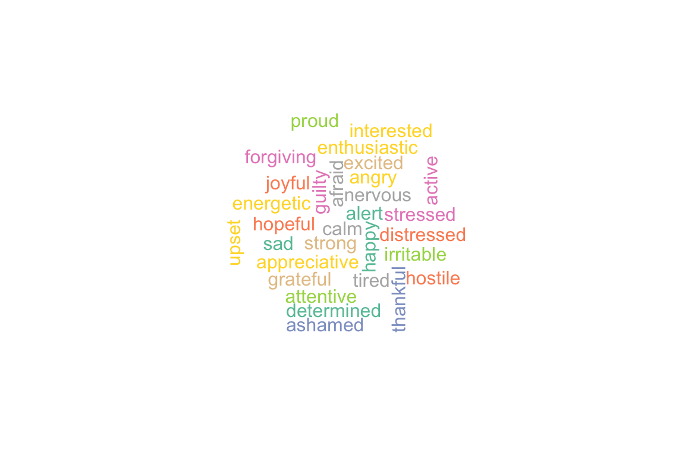
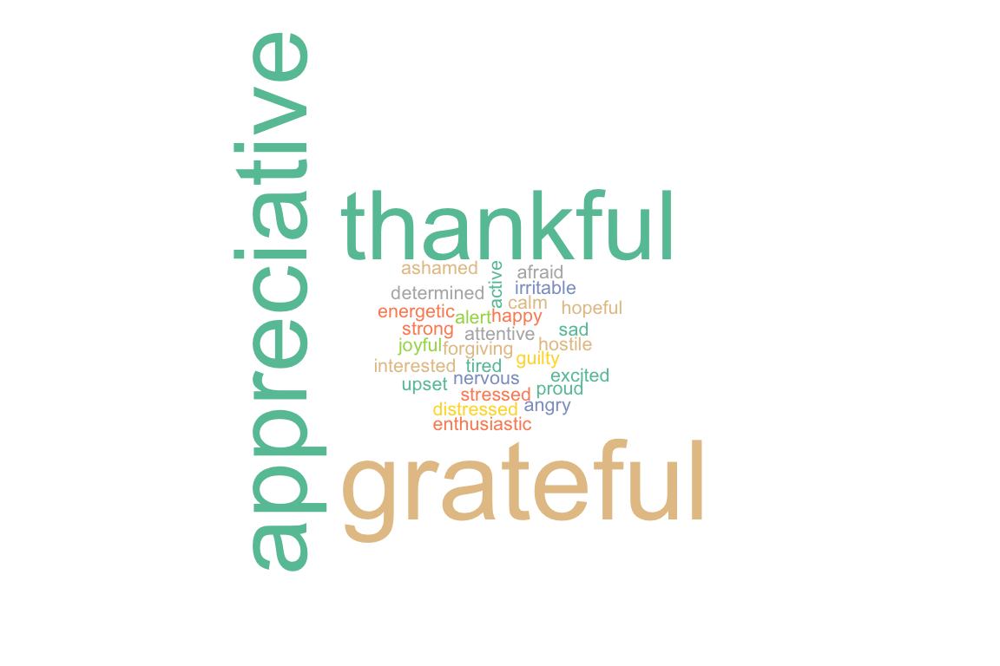
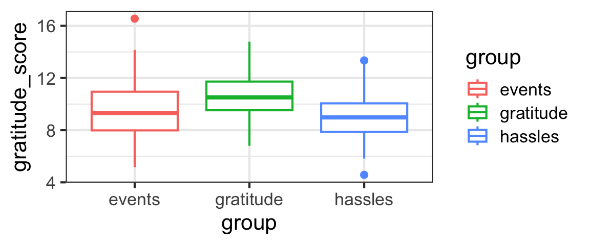
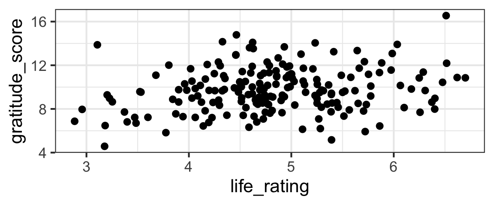
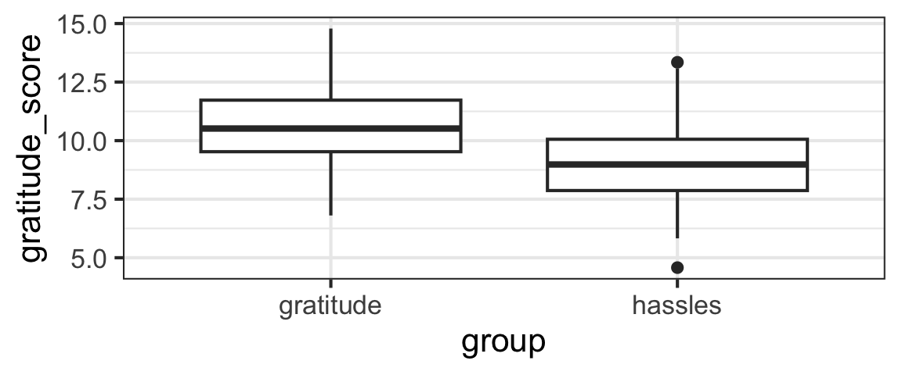

24 Selection and Inference for Regression Models
24.1 Section Learning Outcomes
Earlier, we started but didn’t finish talking about model selection, and making inferences based on linear regression models.
What if we had a model with several predictors, or a categorical predictor, rather than just one quantitative predictor?
This tutorial will give a short overview of a few common model selection tools.
ANOVA??
Note that for simple one-predictor linear regression, the p-value reported at the very end of the model summary is the same as the one for the slope in the coefficient table.
This is only the case when there’s only one, quantitative predictor, since the test at the bottom is testing \(H_0: \text{all the slopes in the model are 0 for all predictors}\). But…it’s reported along with an F-statistic – which reminds us of the one-way ANOVA possibly encountered in a previous stats course. As you later fit models with more than just one predictor, ANOVA does come up as one approach for testing hypotheses about predictor-response associations!
24.2 Case Study: Gratitude
A growing body of research has documented the effects that practicing gratitude can have on people – providing not just spiritual and mental-health benefits, but even improving physical health.
Dataset
We will dive further into this topic – learning about ANOVA and some other tests along the way – via a case study where researchers tried to collect data to answer:
“How does gratitude affect peoples’ mental and physical well-being?”
The data are simulated based on the results of a paper published in 2003:

Can We Induce Gratitude?
To understand whether gratitude can cause improvements in mental and physical health and practices, the researchers needed to do a randomized study, in which they somehow controlled peoples’ gratitude levels. How did they do that?
First, they recruited nearly 200 college students to participate in their study.
They asked participants to complete a weekly journal, writing lists of things that they were grateful for. 1/3 of study participants were randomly assigned to this group - the gratitude group.
Other participants were asked to write about things that annoyed them instead – this was the hassles group.
Finally, a control group – the events group – just wrote about events in the past week that had affected them (could be either positive or negative).
Before delving into any other questions, the researchers had to verify that the gratitude group actually felt more grateful than the other groups…
More Design Details
In addition to the journals, all the students had to complete weekly surveys about their behavior and state of mind.
For example, they had to state how often (on a scale of 1 to 5) they experienced each of a set of feelings over the preceding week:

Pulling out Gratitude
The researchers combined scores from the words thankful, appreciative, and grateful to assess participants’ gratitude. In our dataset, this value is called gratitude_score.

The Data
How do the data actually look?

It seems like perhaps the gratitude_score is higher for the gratitude group and lower for the others, but we really need statistical inference to have more confidence in our judgment of whether the difference is real or if the differences between groups could just be the result of random sampling variation.
Our Questions
As Emmons and McCullough did, our first job will be to test whether the mean gratitude_score is the same for the different groups in the study – the gratitude group, the hassles group, and the events group.
To build up to the question we want to answer (comparing all three groups), we will consider a simplified case with only two groups: the gratitude and hassles groups. This is only for learning purposes and not something we’d do in a real analysis!
We also have other potential quantitative predictors in the dataset we could include in our models. We will take advantage of that to review CIs and tests for a quantitative predictor, too.
Review: Quantitative Predictors
For example, we could consider a model to predict gratitude_score as a function of life_rating (a score measuring positivity about one’s life as a whole).

life_model <- lm(gratitude_score ~ life_rating,
data = grateful)
summary(life_model)
Call:
lm(formula = gratitude_score ~ life_rating, data = grateful)
Residuals:
Min 1Q Median 3Q Max
-4.891 -1.466 -0.098 1.219 5.899
Coefficients:
Estimate Std. Error t value Pr(>|t|)
(Intercept) 7.2008 0.8828 8.157 4.22e-14 ***
life_rating 0.5295 0.1806 2.932 0.00377 **
---
Signif. codes: 0 '***' 0.001 '**' 0.01 '*' 0.05 '.' 0.1 ' ' 1
Residual standard error: 1.98 on 194 degrees of freedom
Multiple R-squared: 0.04243, Adjusted R-squared: 0.03749
F-statistic: 8.596 on 1 and 194 DF, p-value: 0.003775Review: CI for Slope
Find a 95% confidence interval for the slope coefficient of the life_model.
life_model <- lm(gratitude_score ~ life_rating,
data = grateful)
confint(life_model)Review: Test for Slope
Categorical?
If we consider a categorical variable with only two categories, everything is exactly the same (except the interpretation of the slope coefficient, which now gives the difference in means between the two categories).
For example, we can reduce the dataset to exclude the third events group, and then model gratitude_score as a function of group to see if the gratitude and hassles groups have different average gratitude scores.
Of course we would never normally do this! But right now, for learning purposes, we could use a categorical variable with 2 categories…and ours has three. So don’t try this filtering/subsetting at home!
grateful2 <- grateful |>
filter(group != 'events') |>
mutate(group = factor(group))
gf_boxplot(gratitude_score ~ group, data = grateful2)
Practice
Fit the model and, just as in the previous example, find a 95% CI for \(\beta_1\) and test \(H_0: \beta_1 = 0\).
two_group_model <- lm(gratitude_score ~ group,
data = grateful2)
summary(two_group_model)
# if you wanted to pull out just the p-value (advanced move)
coefficients(summary(two_group_model))['grouphassles', 'Pr(>|t|)']Easy peasy! As we mentioned before, the only real difference between this model and the one with a quantitative predictor is that we end up with an indicator variable instead of one with many different numeric values, so the interpretation of the slope coefficient \(\beta_1\) is different.
But what if we have a categorical predictor with MORE THAN TWO categories? We need a test that incorporates differences between all the categories at once, so the tools we have so far aren’t enough.
24.3 Hypotheses for ANOVA
We want to test:
\[H_0: \mu_{gratitude} = \mu_{events} = \mu_{hassles}\]
In other words, our null hypothesis is that the means of all groups are the same. (The \(\mu\)s are the true population means for each of the groups.)
The alternate hypothesis is that at least one pair of groups has different means.
How do we translate this set-up into a linear regression model? We’re considering the model in which we predict gratitude_score with group:
grat_by_group <- lm(gratitude_score ~ group, data = grateful)
summary(grat_by_group)
Call:
lm(formula = gratitude_score ~ group, data = grateful)
Residuals:
Min 1Q Median 3Q Max
-4.527 -1.208 -0.128 1.160 7.016
Coefficients:
Estimate Std. Error t value Pr(>|t|)
(Intercept) 9.5317 0.2383 40.006 < 2e-16 ***
groupgratitude 1.1096 0.3369 3.293 0.00118 **
grouphassles -0.4280 0.3357 -1.275 0.20382
---
Signif. codes: 0 '***' 0.001 '**' 0.01 '*' 0.05 '.' 0.1 ' ' 1
Residual standard error: 1.921 on 193 degrees of freedom
Multiple R-squared: 0.1036, Adjusted R-squared: 0.0943
F-statistic: 11.15 on 2 and 193 DF, p-value: 2.612e-05There are a few equivalent ways of setting this up (depending on which group is included in the intercept), but in R the code above will yield a model like:
\[ y_i = \beta_0 + \beta_1 x_1 + \beta_2 x_2 + \epsilon\]
where \(x_1\) and \(x_2\) are indicator variables for the gratitude and hassles groups:
\[ x_1 = \begin{cases} 1 \text{, if group is gratitude}\\ 0 \text{, otherwise} \end{cases}\]
\[ x_2 = \begin{cases} 1 \text{, if group is hassles}\\ 0 \text{, otherwise} \end{cases}\]
In this framework, \(\beta_0\) is the mean for the events group. \(\beta_1\) and \(\beta_2\) are the differences in means between groups (gratitude and events, and hassles and events). So our intention with this ANOVA is to test \(H_0: \beta_1 = \beta_2 = 0\). If this is true, then the intercept \(\beta_0\) will be the overall mean gratitude_score.
24.4 Test Stat for ANOVA: F-ratio
The big challenge here is to come up with a test statistic – one number that measures evidence against the null hypothesis that all the group means are the same.
How can we define a good test statistic to measure how different more than two numbers are?
The optional video below will walk through a derivation of the F-ratio statistic.
Part 1: What we need to measure
Note: in this video, \(x\) is used for the variable whose mean is being estimated; for us it would make more sense to use \(y\) but I’m trusting you to make the translation…
(You can also watch directly on YouTube if you prefer.)
Part 2: How we measure it
Note: again in this video, \(x\) is used for the variable whose mean is being estimated; for us it would make more sense to use \(y\) but I’m trusting you to make the translation…
(You can also watch directly on YouTube if you prefer.)
Sampling Distribution of F, Simulated
All right, we can compute the F-ratio now. And we know that the bigger it is, the stronger the evidence we have against the idea that the categorical predictor is not associated with the response.
But…how big will it be, even if there is no association?
If \(H_0\) is true, then SSG may be ‘close to 0’ because the group means will be very close to the overall mean. So, MSG and the whole F-ratio will also be near 0 - but since it MSG is not exactly zero, it matters a lot what the corresponding value of MSE is…
F will be close to 1 if the null is true and the sample sizes in the groups are equal. MSE and MSG will BOTH depend on the overall variance of the data. In terms of intuition about the F ratio, though, it can be more useful to think about what happens to MSG when \(H_0\) is true (it gets smaller, and so so does F…). Bigger F is more evidence against \(H_0\).
If \(H_0\) is very wrong, then SSG will be relatively large because the group means will be quite different from the overall mean. And SSE will be relatively small, if there is little within-group variation. So the ratio will be (big / small) = VERY BIG, providing strong evidence against the null hypothesis and allowing us to conclude that the group means are NOT the same.
Again, we know that a large value of F will let us reject the null. But how big is “large”?
We’d need to know the sampling distribution of F (when \(H_0\) is true) in order to judge.
Letting R do all the work
We won’t go into the details of the calculation here; we’ll just note that there’s an R function to automate it all.
Anova Table (Type II tests)
Response: gratitude_score
Sum Sq Df F value Pr(>F)
group 82.30 2 11.152 2.612e-05 ***
Residuals 712.15 193
---
Signif. codes: 0 '***' 0.001 '**' 0.01 '*' 0.05 '.' 0.1 ' ' 1But notice – all the quantities that we used in our derivation of the F-statistic are right there in the ANOVA output table!
- The “group” row gives the SSG and its df (and the F stat and p-value)
- The “Residuals” row gives the SSE and its df. (Residuals is another statistical term for errors.)
- The “Sum Sq” column corresponds to “SS” terms (“MS” terms are not in the table, but can be computed from SSX and df from the table)
- The “F value” is the F-ratio (test statistic)
- The “Pr(>F)” is the p-value of the test
(A classic intro-stat textbook ANOVA problem is to give you a partially-filled-in ANOVA results table, and ask you to fill in the missing values.)
R Note: Anova(), not anova()!
Be careful not to use anova() to carry out tests related to predictors in a regression model.
anova() does “sequential” tests; for example, if you fit a model y ~ pred1 + pred2 + pred3, for pred1 anova() will compare the intercept-only model to the one with pred1 in it, but for pred2 it will compare the model with pred1 and pred2 in it to the one with only pred2, and for pred3 it will compare the model with all three predictors to the one without pred3. ACK!
In other words, with anova(), the order in which predictors are listed greatly affects the hypotheses tested, and the test results. THIS IS (ALMOST ALWAYS) NONSENSE. You want Anova() which is in the package car.
Model Comparisons
In other cases, if we want to compare two particular models with the same response variable but different predictors, we can just fit them both and then compare them with the syntax below.
anova(model1, model2)(Yes, little-a anova() is what you want this time.)
Why might we want to do this? Maybe, for example, you have two different predictors that measure a similar quantity in different ways and you want to know which one works better as a predictor?
This anova(model1, model2) approach also works for any of the above cases (removing parameters), if you manually fit the two models.
24.5 Akaike’s Information Criterion
Information theory has influenced many fields, including statistics. In 1974, Japanese statistician Hirotugu Akaike

used information theory to derive a new criterion, now known as Akaike’s Information Criterion (AIC), to allow comparison of a set of statistical models fitted to a dataset.
24.6 AIC Definition
AIC is defined as:
\[ \text{AIC} = 2k - 2(\hat{\ell})\]
Where \(k\) is the size of the model (number of parameters being estimated), and \(\hat{\ell}\) is the maximum value of the (base \(e\)) log-likelihood fuction.
- The first term, \(2k\), inflates the AIC value, causing larger models to have worse AIC values. This is often thought of as a “penalty” on model size.
- The second term, \(-2\hat{\ell}\), means that (better-fitting) models with higher log-likelihoods have better AIC values.
R function AIC() computes the AIC for fitted lm() models.
24.7 AIC Practice
We can use AIC to choose the “best” of a pair (or a larger group) of models.
For example, before we used ANOVA to decide whether group (“gratitude”, “hassles”, and “events”) is a good predictor of gratitude score:
Anova Table (Type II tests)
Response: gratitude_score
Sum Sq Df F value Pr(>F)
group 82.30 2 11.152 2.612e-05 ***
Residuals 712.15 193
---
Signif. codes: 0 '***' 0.001 '**' 0.01 '*' 0.05 '.' 0.1 ' ' 1We can make the same comparison with AIC.
First, we find the AIC for the full model with the group predictor:
[1] 817.0972Hmmm…this number means nothing in isolation. The only way to get meaning from it is to compare it to the AIC for another model fitted to the same exact dataset and see which is better (smaller).
Do the rest of the comparison: what is the AIC of the intercept-only model, and which model is better according to AIC?
Note: working on your own dataset in a qmd file, you’d probably fit each model, give the fitted model object a name, and then use AIC(model_name)…
AIC(lm(gratitude_score ~ 1, data = grateful))
AIC(lm(gratitude_score ~ group, data = grateful))
AIC(lm(gratitude_score ~ 1, data = grateful)) -
AIC(lm(gratitude_score ~ group, data = grateful))Remember – smaller AIC is better!
24.8 IC, How big a difference?
Strictly and simply using AIC, we can say that a model with lower AIC is better (regardless of how small the difference between the AIC values is).
In practice, if using AIC to choose between two models, analysts often require some minimal AIC improvement to justify adding an additional parameter/predictor to a model. (Common thresholds are 2, 3, or maybe 6). So, one might not prefer a larger model unless it reduces AIC by at least 2-3 units.
So, if we are comparing two models (say, with and without a key predictor of interest), if the model with the predictor is better by well over 2-3 AIC units, we consider that pretty convincing evidence of an association between that predictor and the response.
For a lot more excellent information about practical use of AIC, the interested reader can check out the classic book by Burnham and Anderson: